Интеграции, API и администрирование в Битрикс24
Этот модуль завершает курс и учит не программировать интеграции, а грамотно формулировать интеграционный сценарий: понимать, какие данные нужны, откуда они идут, кто владеет процессом, какие права допустимы, как тестировать подключение и как сопровождать его после запуска.
Что важно понять в M10
Интеграция — это не «подключить что-нибудь к Битрикс24». Это управляемый обмен данными между системами, который должен решать конкретную бизнес-проблему.
Результат прохождения
сотрудник умеет сформулировать интеграционный сценарий, выбрать тип подключения и оценить риски
Что стоит запомнить
Хорошая интеграция = бизнес-цель + карта данных + владелец + минимальные права + тестовый сценарий + журнал ошибок + регламент сопровождения.
Сначала описываем процесс и данные. Потом выбираем способ подключения. Потом выдаем минимальные права. Потом тестируем. Потом сопровождаем и контролируем.
Паспорт модуля
Место в курсе
финальный модуль после M1–M9
Входной уровень
пользователь понимает задачи, проекты, документы, отчетность, CRM и автоматизацию
Целевая аудитория
руководители, администраторы Битрикс24, методисты, CRM-ответственные, ИТ-специалисты, владельцы процессов
Итоговый результат
сотрудник умеет сформулировать интеграционный сценарий, выбрать тип подключения и оценить риски
сотрудник умеет сформулировать интеграционный сценарий, выбрать тип подключения и оценить риски
1. Интеграция как управляемый обмен данными
В M10 интеграция рассматривается не как техническая «хотелка», а как способ решить бизнес-проблему через обмен данными между системами. Если процесс не описан, источник истины не определен, а владелец не назначен, любая интеграция быстро превращается в риск.
Бизнес-цель
Интеграция должна отвечать на вопрос: какую проблему она решает.
Источник истины
Нужно понимать, где хранятся главные данные и какая система считается основной.
Проверяемость
У интеграции должен быть тестовый сценарий и понятный контроль результата.
Сопровождение
У интеграции должны быть владелец, журнал ошибок и регламент проверки.
Где рождается исходная информация: сайт, CRM, 1С, документ
Что запускает обмен: заявка, изменение статуса, загрузка файла
Какие данные передаем: имя, телефон, объект, стадия, сумма
Что делает принимающая система: создает лид, задачу, комментарий
Как фиксируем успех, ошибку, повтор и кто это проверяет
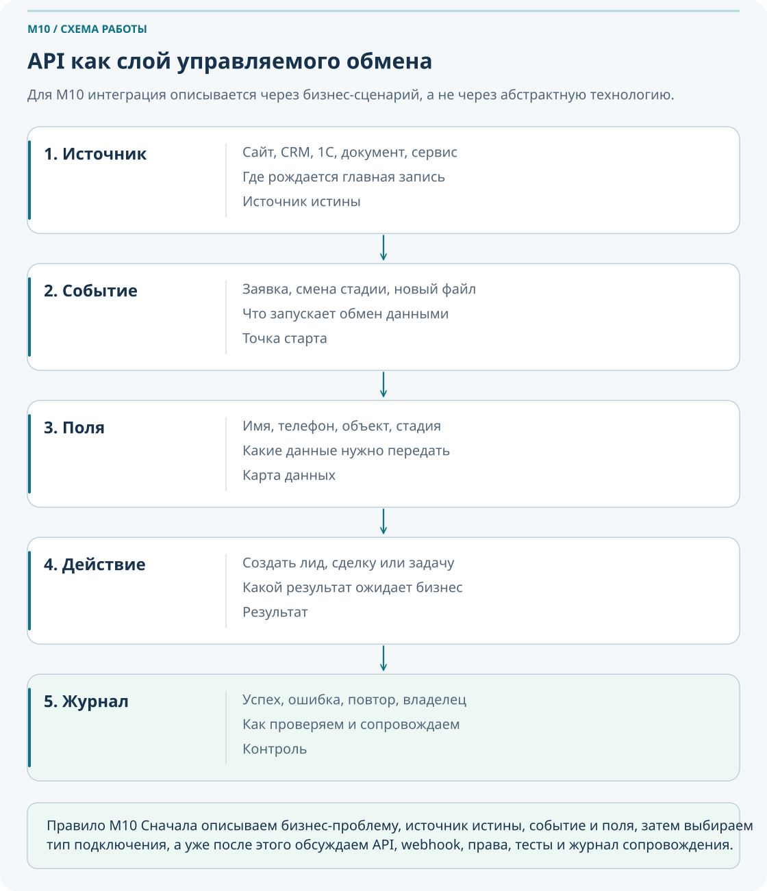
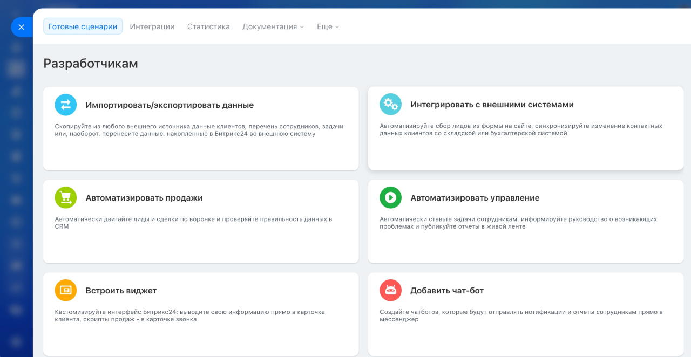
Для большинства сотрудников важно не писать код, а уметь описать сценарий интеграции: что передаем, откуда, куда, когда, кто владелец, какие права нужны и как мы проверяем результат.
2. Типы интеграций
Доступность подключения. Перед подключением проверьте тариф, права и действующую подписку BitrixGPT + Маркетплейс. Наличие пункта меню не гарантирует доступность конкретного сценария. Официальные условия подписки.
Перед тем как думать про API, нужно понять, нельзя ли закрыть задачу более простым способом. В Bitrix24 есть штатные подключения, готовые приложения и собственная разработка. Собственное решение может обращаться к REST API с авторизацией через входящий вебхук или OAuth; исходящий вебхук доставляет уведомления о событиях.
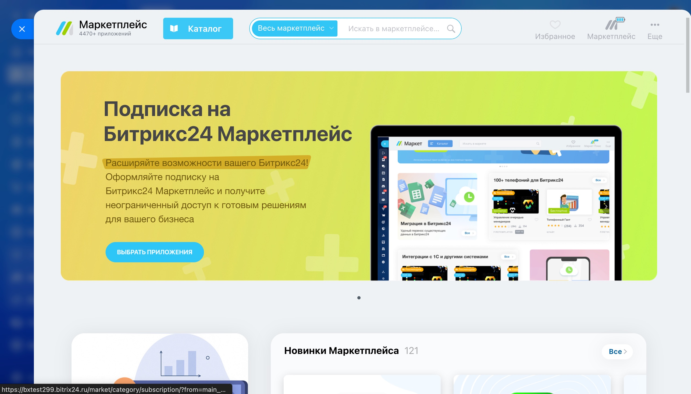
| Тип | Когда подходит | Сильная сторона | Главный риск |
|---|---|---|---|
| Штатная интеграция | Есть готовое встроенное решение под вашу задачу | Быстрый запуск и меньшая нагрузка на сопровождение | Ограниченная гибкость |
| Приложение Маркетплейса | Нужен готовый поддерживаемый сценарий без собственной разработки | Скорость внедрения | Нужно проверять права и надежность поставщика |
| Входящий webhook | Нужен быстрый внутренний сценарий одного портала | Простота старта | Утечка URL дает доступ в рамках прав webhook |
| Исходящий webhook | Портал должен сообщать внешней системе о событии | Удобная реакция на событие | Нужен защищенный внешний обработчик и журналирование |
| Собственное приложение с REST API и OAuth | Нужна сложная двусторонняя логика и гибкая работа с данными | Максимальная управляемость сценария | Требует проектирования, прав, тестов и сопровождения |
Сначала сравните штатное подключение, готовое приложение и собственную разработку по требованиям. Для локального серверного сценария одного портала может подойти входящий вебхук. Для устанавливаемого приложения или нескольких порталов рассматривайте OAuth. В обоих случаях обмен может использовать REST API; выбор авторизации не определяет сложность бизнес-процесса.
Для нескольких кейсов определите, можно ли решить задачу штатными средствами без интеграции.
Сравните готовое приложение, локальный сценарий через вебхук и приложение с OAuth по сроку, риску и сопровождению.
Подготовьте краткое объяснение, почему выбрали именно этот тип интеграции для процесса компании.
3. REST API простым языком
M10 не учит писать код, но пользователь должен понимать словарь интеграций. Это помогает формулировать требования для администратора или разработчика и не путать типы ошибок, прав и действий.
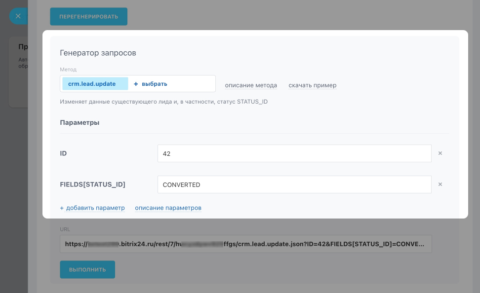
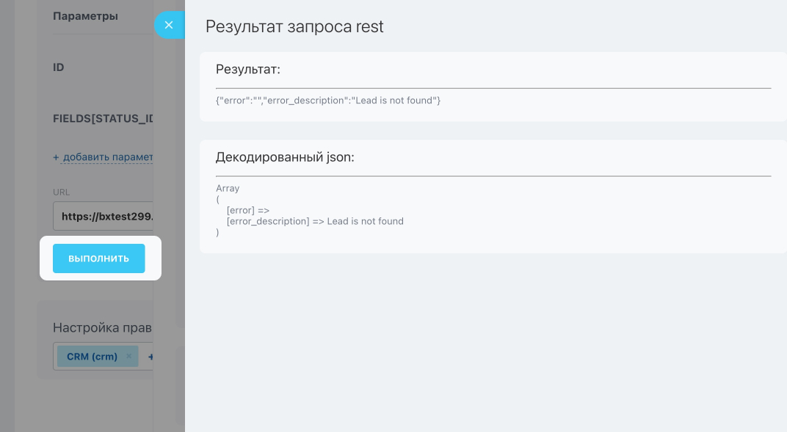
API
Интерфейс, через который программы обращаются к функциям и данным другой системы.
REST API
Набор методов Битрикс24, вызываемых по HTTP. Метод API, например создание задачи, не следует путать с HTTP-методом GET или POST.
Метод
Конкретное действие, например получить список, создать элемент, обновить поле.
Параметры
Какие поля и значения мы передаем в запросе.
Ответ
Что вернула система: данные, идентификатор, подтверждение успеха или ошибку.
Endpoint
Точка, по которой система принимает запрос.
Система просит Bitrix24 выполнить действие
Bitrix24 проверяет, разрешено ли это действие
Система ищет нужный метод и применяет данные
Возвращается успех, ошибка или нужные данные
Сотруднику не обязательно знать синтаксис REST-запросов. Ему важно понимать, какие данные должны уйти, какое действие ожидается и какие права нужны для такого действия.
4. Вебхуки
Создавать вебхук и выполнять вызовы для этого модуля необязательно: достаточно карты обмена и тестовых примеров без рабочих ключей. Официальное описание входящих и исходящих вебхуков.
Входящий вебхук содержит секрет для вызова методов REST API от имени создавшего его пользователя в пределах доступных прав. Исходящий вебхук передает событие во внешний обработчик; для чтения полных данных обработчику может потребоваться отдельный вызов API. Это разные направления обмена, а не два одинаковых способа входа в систему.
Входящий webhook
Подходит для внутреннего сценария одного портала, когда внешняя система должна создавать или изменять данные в Bitrix24.
Исходящий webhook
Подходит, когда Bitrix24 должен отправлять сигнал о событии наружу: например, при изменении статуса или создании элемента.
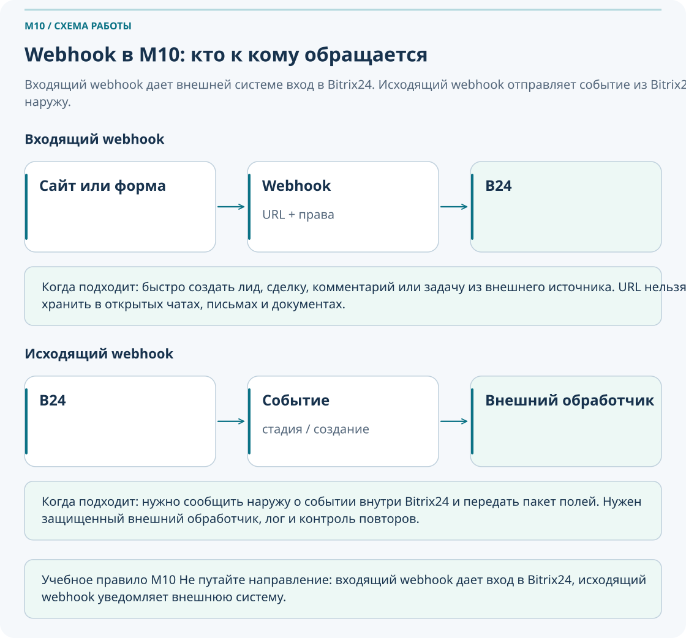
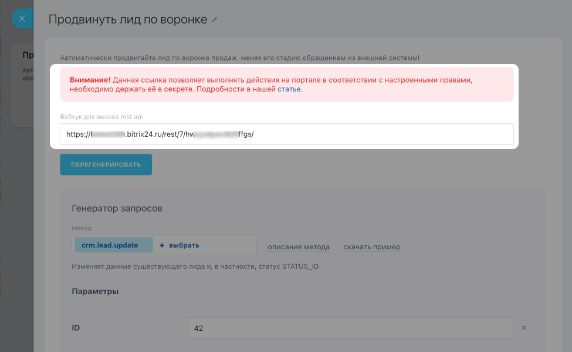
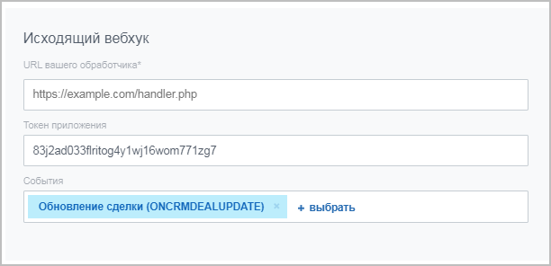
URL webhook — это чувствительный доступ. Его нельзя хранить в открытых чатах, письмах, общих документах и скриншотах. Утечка URL означает утечку доступа в рамках прав, выданных этому webhook.
| Что проверить | Почему это важно |
|---|---|
| Где хранится URL webhook | Чтобы он не оказался в открытом доступе |
| Какие права выданы | Чтобы webhook не имел лишнего доступа |
| Кто владелец | Чтобы было понятно, кто отвечает за отключение и обновление |
| Есть ли запись в реестре | Чтобы webhook не стал «невидимой» интеграцией без контроля |
5. Безопасность и минимально достаточные права
Принцип минимально достаточных прав означает, что интеграция должна получить только тот доступ, который действительно нужен для сценария. Если приложение или webhook просят больше, чем нужно для заявленной функции, это уже повод для проверки и вопросов.
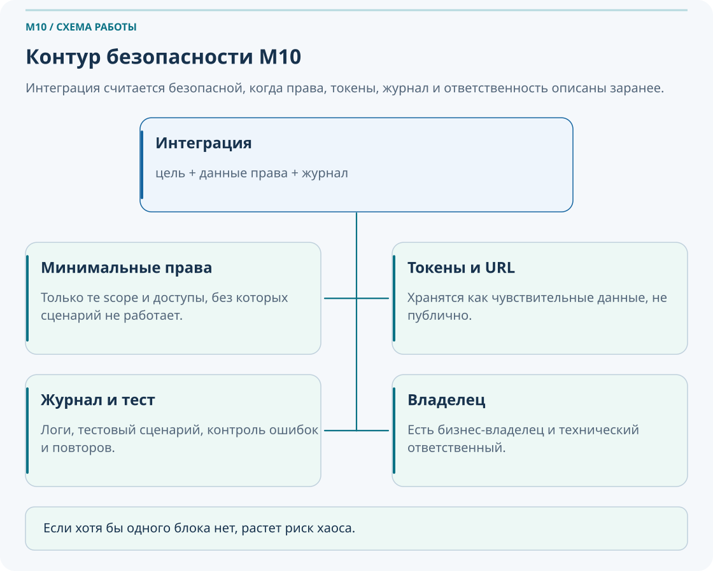
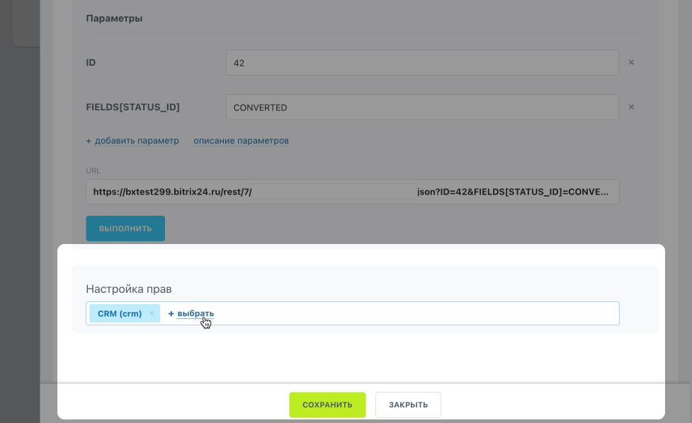
Минимальные права
Даем только те права, без которых сценарий не работает.
Токены и ключи
Храним как чувствительные данные и не публикуем открыто.
Проверка приложения
Сравниваем заявленную функцию и фактически запрашиваемые доступы.
Увольнение владельца
Проверяем все токены, webhook и приложения, связанные с его учетной записью.
Практика «Оценка прав приложения»
Приложение заявляет, что нужно только для загрузки заявок с сайта и отправки уведомлений по сделкам. При этом оно просит права на CRM, задачи, Диск, пользователей, структуру компании и бизнес-процессы.
- Определите, какие права могут быть оправданы.
- Определите, какие права выглядят избыточными.
- Сформулируйте вопросы поставщику.
- Примите решение: разрешить, ограничить или отклонить.
- Зафиксируйте решение в реестре интеграций.
6. Лимиты, ошибки и устойчивость
При 503 / QUERY_LIMIT_EXCEEDED уменьшайте частоту запросов и повторяйте с задержкой. Ошибка 429 / OPERATION_TIME_LIMIT означает другой лимит: ресурсоемкость метода. Ошибки прав и полей не исправляются бесконечным повтором. После тайм-аута создания записи сначала проверьте внешний идентификатор: запись могла создаться, даже если ответ потерялся. Пакетный вызов не отменяет все ограничения. Лимиты REST API; коды ошибок.
Интеграция должна уметь не только отправлять данные, но и переживать ошибки. В REST API Bitrix24 существуют лимиты запросов, и при превышении порога система может возвращать ошибку QUERY_LIMIT_EXCEEDED. Это значит, что интеграция должна уметь работать с повторами, задержками, очередями и контролем ошибок.
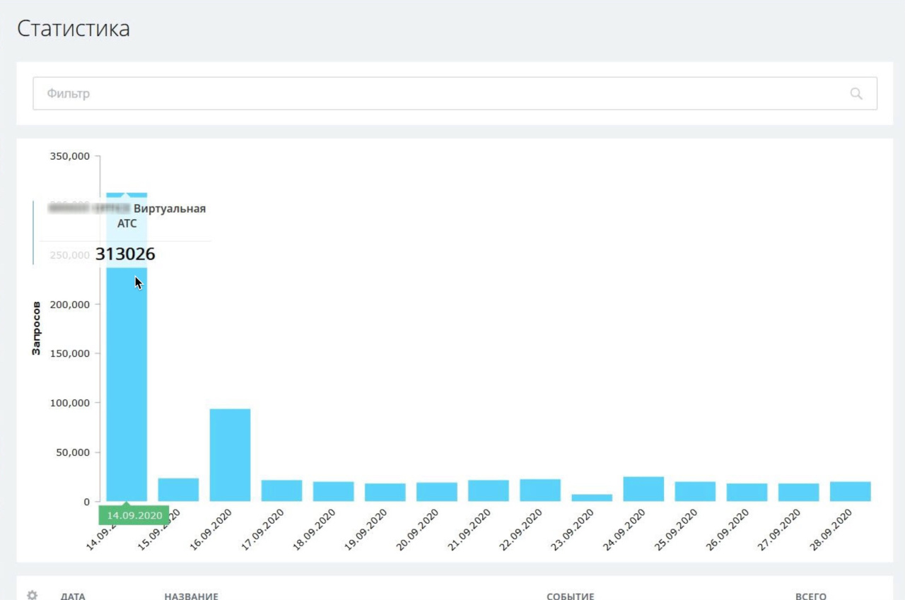
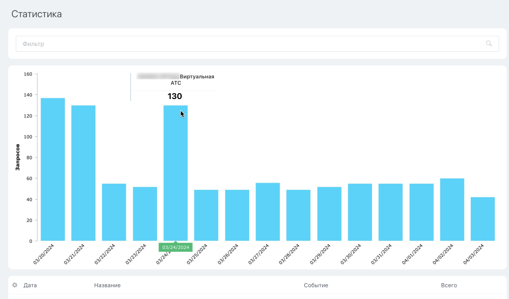
| Проблема | Что нужно сделать |
|---|---|
Ошибка лимита QUERY_LIMIT_EXCEEDED |
Добавить задержку, очередь, повторную попытку или пакетную обработку |
| Дубли данных | Проверить внешний ключ, ID, телефон, email или другой идентификатор |
| Сломалось после изменения поля | Проверить карту данных, обязательные поля и тестовый сценарий |
| Неясно, где искать ошибку | Вести журнал: время, ID события, метод, статус и обезличенная ошибка; исключать токены, секретную часть URL и лишние персональные данные |
Интеграция без обработки ошибок и журналирования может какое-то время выглядеть рабочей, но при первом изменении полей, перегрузке или внешнем сбое быстро становится источником хаоса.
7. Администрирование и реестр интеграций
Любая интеграция должна быть видимой для компании. Если никто не знает, зачем она существует, кто владелец, какие права выданы и как ее проверять, значит управление интеграцией отсутствует.
Владелец интеграции
Отвечает за бизнес-цель, полезность сценария и решение, нужна ли интеграция дальше.
Технический ответственный
Понимает, где лежат настройки, как проверить работу, где смотреть журнал и как менять параметры.
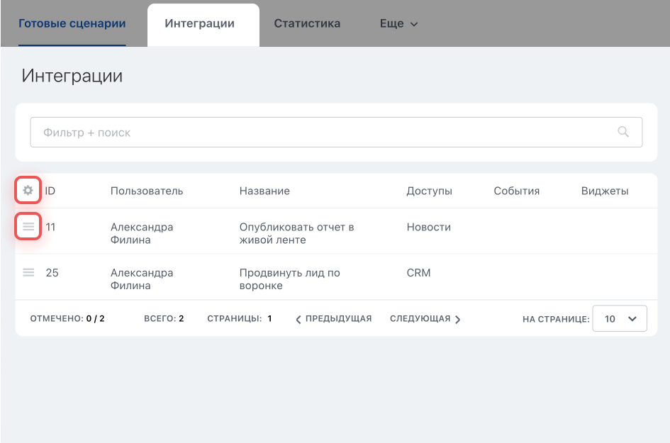
Практика «Реестр интеграций»
Все, что создается в Developer Resources, должно попадать в реестр интеграций. Иначе через несколько месяцев в портале появятся подключения, вебхуки и права, про которые никто уже не помнит.
8. Сквозная практика: «Сайт → CRM → задача инженеру»
Этот сценарий связывает весь M10 в единый учебный маршрут и показывает полный цикл: от бизнес-проблемы до регламента сопровождения интеграции.
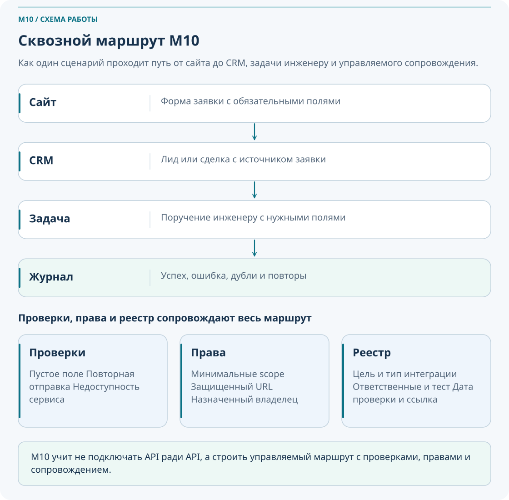
Проблема
Заявки с сайта приходят на почту, менеджер переносит их вручную, инженер узнает о заявке с задержкой.
Карта данных
Определяем поля: имя, компания, телефон, email, объект, тип работ, комментарий, источник.
Выбор подключения
Выбираем готовое или собственное решение; для вызовов REST API определяем авторизацию через вебхук или OAuth.
Права
Выдаем только минимально необходимые доступы для создания лида или сделки и постановки задачи.
Тест
Проверяем успешную заявку, пустое поле, повторную отправку и недоступность внешней системы.
Журнал
Фиксируем успехи, ошибки, повторы, время срабатывания и ответственного за разбор.
Реестр
Вносим интеграцию в реестр и связываем с инструкцией в базе знаний.
Сопровождение
Проверяем работу после изменений полей, стадий, ролей или процесса.
Практика «Карта данных»
Для сценария Сайт → CRM → задача инженеру перечислите:
- какие поля обязательны;
- какие поля служебные;
- что делать, если одно из обязательных полей пустое;
- как предотвратить повторное создание заявки при дубле отправки формы.
9. Что делать, если…
Если непонятно, какой тип интеграции выбрать
Сначала опишите цель, данные, событие, владельца и частоту обмена. Затем сравните штатное подключение, готовое приложение и собственную разработку с подходящим способом авторизации.
Если приложение просит слишком много прав
Сравните заявленную функцию и фактические права. Если права не обоснованы, не устанавливайте приложение до разъяснения.
Если webhook URL попал в открытый доступ
Немедленно отключите или пересоздайте webhook, проверьте журнал действий и обновите записи в реестре и инструкциях.
Если интеграция перестала работать после изменения поля
Проверьте карту данных, обязательные поля, журнал ошибок и тестовый сценарий. Часто проблема связана именно с изменением структуры данных.
Если данные задублировались
Проверьте правило идентификации: ID, ИНН, email, телефон или внешний ключ. Добавьте защиту от повторов.
Если API возвращает ошибку лимита
Проверьте частоту запросов, добавьте очередь, задержки, batch-подход или повтор с backoff.
Если владелец интеграции уволился
Проверьте все токены, webhook и приложения, связанные с его учетной записью, и назначьте нового владельца и технического ответственного.
Если никто не знает, зачем нужна интеграция
Приостановите сценарий, найдите бизнес-владельца, проверьте фактическое использование и примите решение: оставить, изменить или отключить.
10. Типичные ошибки
Начинать интеграцию с технологии, а не с бизнес-проблемы и карты данных.
Выдавать приложению или webhook больше прав, чем нужно для сценария.
Хранить URL webhook в открытом виде в чатах, письмах или документах.
Не вести журнал ошибок и не иметь тестового сценария.
Не фиксировать интеграцию в реестре и не назначать владельца.
Не проверять интеграцию после изменения полей, стадий или бизнес-процесса.
11. Самопроверка
Вопросы ниже проверяют не знание терминов ради терминов, а умение мыслить интеграцией как управляемым процессом.
Вопросы
- Что нужно сделать до выбора типа интеграции?
- Как связаны готовая интеграция, REST API и входящий вебхук?
- Когда подходит входящий webhook?
- Чем опасна утечка URL webhook?
- Что означает принцип минимально достаточных прав?
- Что должно быть в реестре интеграций?
- Что такое источник истины?
- Что делать при ошибке
QUERY_LIMIT_EXCEEDED? - Зачем нужен тестовый сценарий?
- Когда интеграцию нужно отключить или пересмотреть?
Проверить свои ответы
- Описать бизнес-проблему, данные, событие, владельца и ожидаемый результат.
- Интеграция решает рабочую задачу и может использовать REST API. Входящий вебхук дает способ авторизации для вызова его методов; собственное приложение также может использовать OAuth.
- Когда нужен быстрый внутренний сценарий одного портала и понятен набор прав.
- Утечка URL дает доступ в рамках прав этого webhook.
- Интеграция получает только те доступы, которые реально нужны для ее функции.
- Название, бизнес-цель, системы, тип, владельца, ответственного, права, тесты, журнал, риски и дату проверки.
- Система, в которой данные считаются главными и откуда их нужно брать как эталон.
- Добавить очередь, задержку, backoff, повтор или пакетную обработку и проверить журнал.
- Чтобы проверить сценарий на успех, ошибку, дубль и сбой до боевого запуска.
- Когда никто не знает ее цель, когда изменилась бизнес-логика или когда сопровождение и риск перестали быть оправданными.
12. Итоговое практическое задание
Сценарий: компания хочет автоматизировать процесс «Заявка с сайта → CRM → задача инженеру». Сейчас заявки приходят на почту, менеджер вручную переносит данные, инженер узнает о заявке с задержкой.
- Опишите бизнес-проблему.
- Опишите ожидаемый результат.
- Определите системы-участники.
- Определите событие запуска.
- Составьте карту данных: имя, компания, телефон, email, объект, тип работ, комментарий, источник.
- Выберите тип интеграции и обоснуйте выбор.
- Определите минимальные права.
- Назначьте владельца и технического ответственного.
- Опишите тестовые сценарии: успешная заявка, пустое поле, повторная отправка, недоступность внешней системы.
- Опишите журнал ошибок.
- Заполните реестр интеграции.
- Подготовьте краткую инструкцию для базы знаний.
- Опишите, как оценить эффект через месяц.
Критерии успешного прохождения
- Сотрудник различает готовое решение, интерфейс REST API, авторизацию через вебхук или OAuth и исходящее уведомление о событии.
- Сотрудник умеет описать интеграционный сценарий через данные, событие и действие.
- Сотрудник понимает риски URL webhook и принцип минимально достаточных прав.
- Сотрудник умеет оценить права приложения и зафиксировать решение.
- Сотрудник умеет заполнить базовый реестр интеграций.
- Сотрудник понимает необходимость тестового сценария, журнала и сопровождения.
- Сотрудник может подготовить понятное ТЗ на интеграцию для администратора или разработчика.